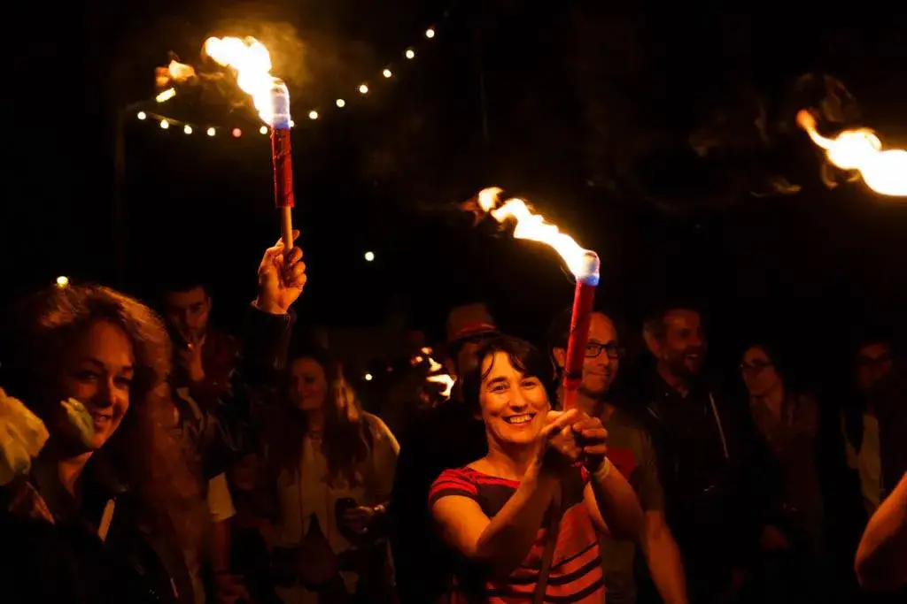
Edición 2026
Qué é o Pasabodeghas?
O "Pasabodeghas" é unha experiencia para desfrutar xente de tódalas idades; dende a cativada, pasando pola mocidade…e ata as persoas maiores.
Ten por obxectivo recuperar espazos para o encontro aproveitando ao máximo os recursos que ofrece a zona (adegas, eiras, camiños… viños, tapas…). Nos diferentes espazos encóntranse obradoiros, xogos populares, exposicións, postos de artesanía, produtos da terra, espectáculos de teatro, circo, animación, grupos de música tradicional, espazos de expresión e creación…
Nesta andaina comunitaria están implicados/as un amplo abano de colaboradores/as: adegueiros/as, veciños/as, grupos de música tradicional, voluntarios/as, as persoas que ceden exposicións, patrocinadores/as, o Concello de Vedra, a Deputación da Coruña, a Xunta de Galicia, os medios de comunicación…e ti…festeiro/a .
En definitiva, o "Pasabodeghas" busca que as persoas que asistan, descubran o sentir da aldea, coñezan as tradicións, os costumes, a gastronomía, a música e as súas xentes.
- Espazo Infantil, con obradoiros e espectáculos, apto para tódolos públicos e para desfrutar en familia
- Espazo de xogos populares para recuperar as tradicións
- Postos de artesanía con produtos locais
- Exposicións culturais distribuídas nas 9 adegas
- Música tradicional ao longo da tarde en diferentes espazos
- Viva da terra
- A famosa subida "ghaiteira" dende o cruce da Pedreira, rematando cun espectáculo nocturno
- Concertos de música folk e tradicional
Qué te vas atopar?
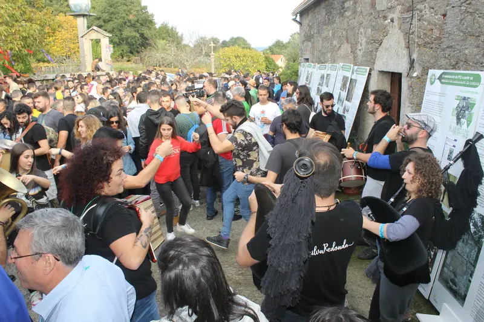
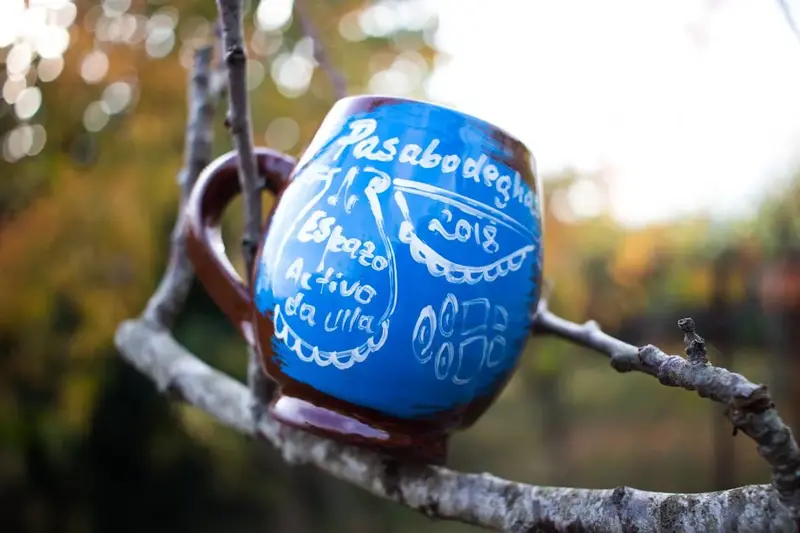
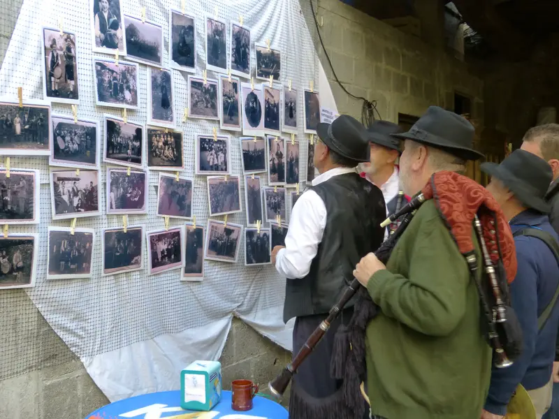
Imaxes do Pasabodeghas
Edicións anteriores: 2025
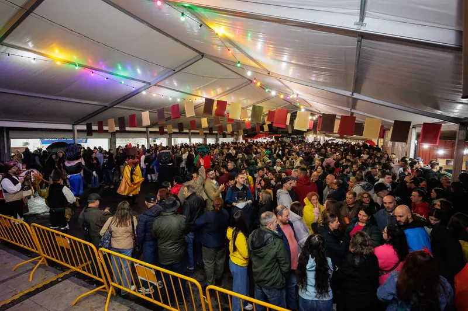
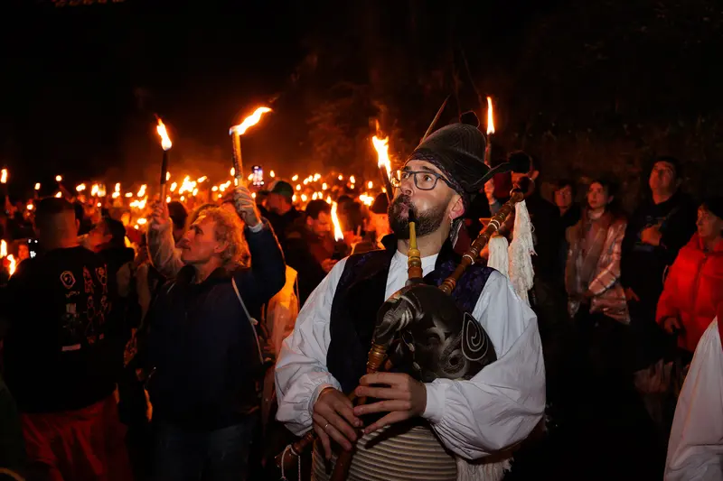
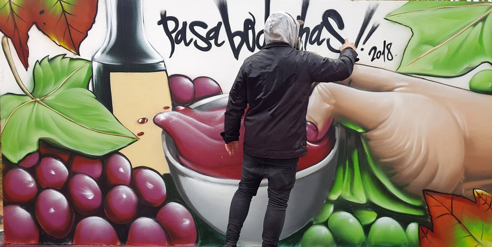
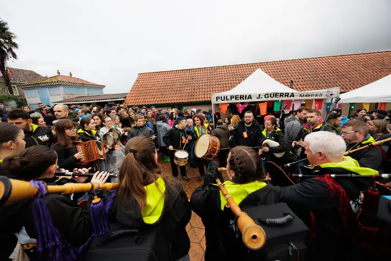
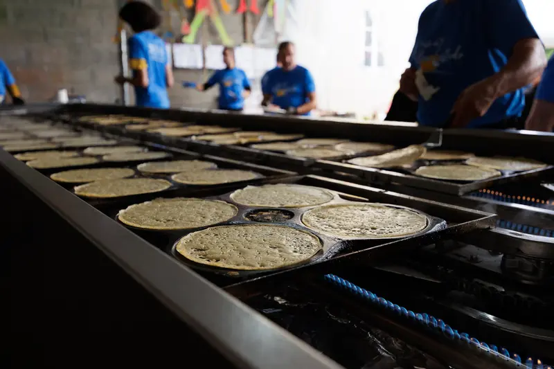
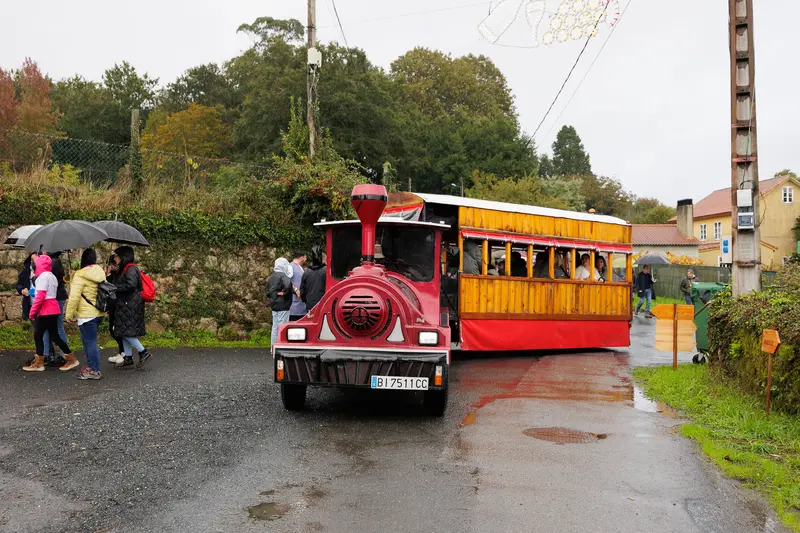
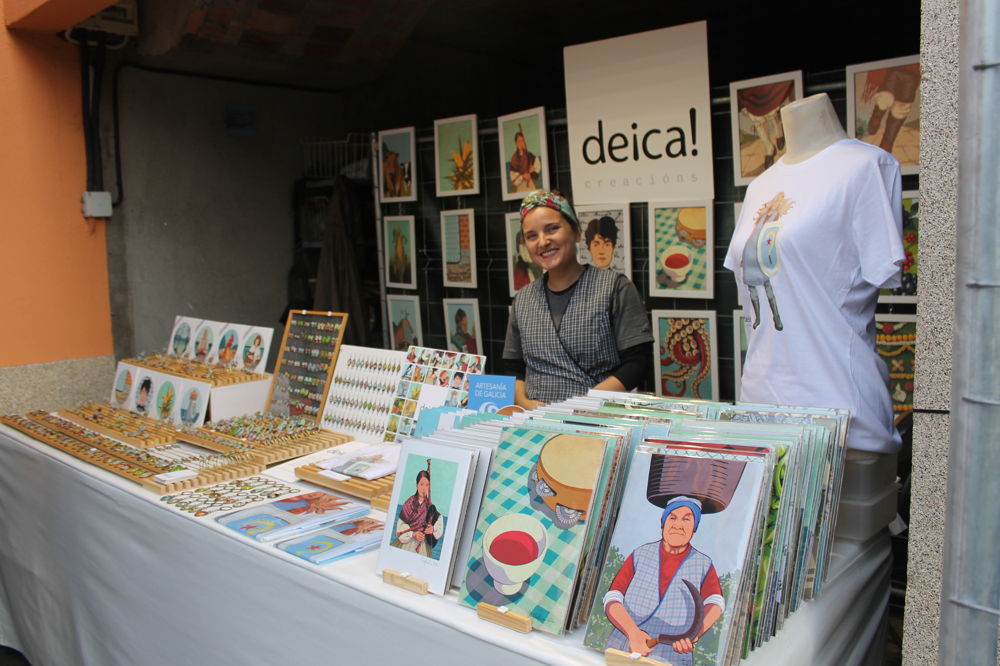
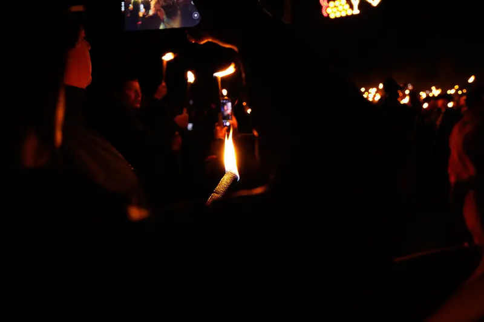
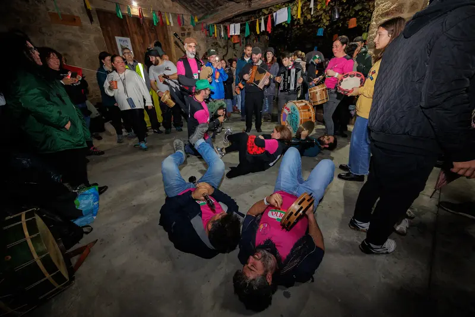
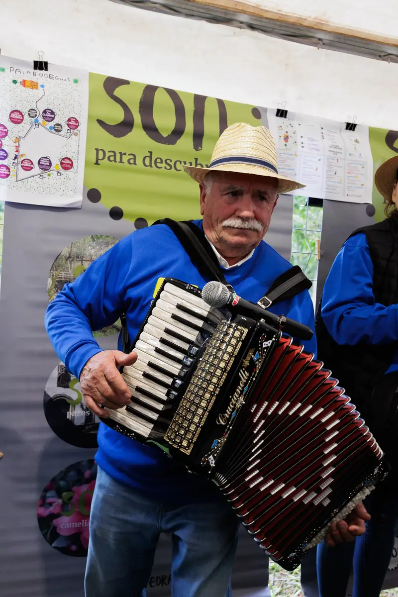
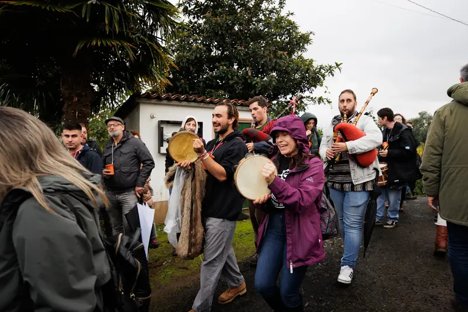
Ubicación
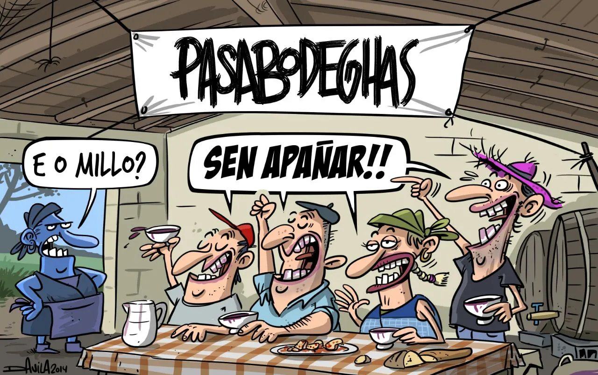
Participando, apoiando, compartindo, colaborando, construíndo, …poderemos dicir…
Pasabodeghas…e o millo?...sen apañar!